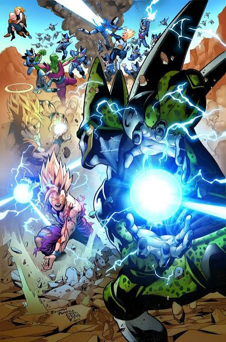

Gohan is one of the main characters of the Dragon ball animated series because
he is the son of the mainest character who is Goku. Gohan is pretty important in
the story because he has lots of potential. His main power source is through emotion
that Goku helps him unleash. For example when the villain named Cell killed a bunch of
Gohan's friends, Gohan became way stronger and killed Cell. Another time is during the
Super Dragon Ball Heroes movie, which was years later. The way stronger version of Cell
really damaged Piccolo and got Gamma 1 killed.
Future Gohan
I drew a picture of Gohan but he only had one arm, because it was the Gohan
from a different timeline. In this timeline he dies and Trunks avenges him later.
The Gohan of the future timeline is probably my favorite Gohan because he was really
cool. He died because the 2 evil androids teamed up and killed him, but he put up
an amazing fight against them and I wish he won.

Importance to Story
Future Gohan didn't have much screen time but he was pretty amazing because he learned
how to become really strong without any guidance. He is also the reason that future Trunks
was able to travel back in time and get help from Goku and Vegeta. So in conclusion even
if Gohan lost, he is still pretty amazing and important to the story.